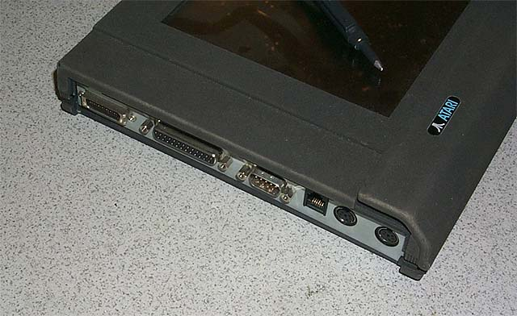
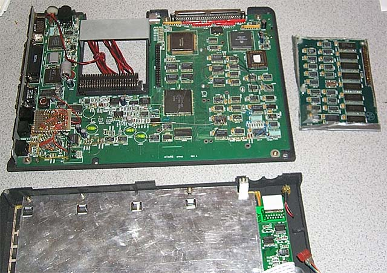

The Atari ST-PAD is a portable Atari computer which combined the Atari
TOS operating system with PenOS features to allow a user to interact with
the tablet using a special electronic pen instead of a mouse.
The LCD is not backlite and uses the same Epson Custom Module (ECM) as
the Atari STBook laptop. The unit is a 8Mhz 68000 CPU system
with 1MB of memory, no hard drive is contained within the unit, instead
high density RAM cards were to be used for storage, two custom card slots
are located on the unit and well as a flip-up storage area for the electronic
pen. Ports include external keyboard via RJ-11, serial, parallel
and what appears to be an external bus connector.

The units were a true breakthrough and if Atari had followed through and
sold the unit to vertical markets such as inventory control, hospital patient
monitoring and other markets they could have grabbed ahold of another niche
market and placed a strong foot hold on it. Unfortunately the
ST-PAD never made it to production and like the STBook and the MicroFalcon040
they would disappear from the Atari scene never to be seen again.
The ST-Pad was designed and shown sometime around 1991 when Atari was just
getting ready to shut down all computer operations and switch all efforts
over to the new Atari Jagaur 64 video game console. Atari
felt that it could no longer compete in the PC/Windows dominated computer
market and simply gave up and moved back to video games.
